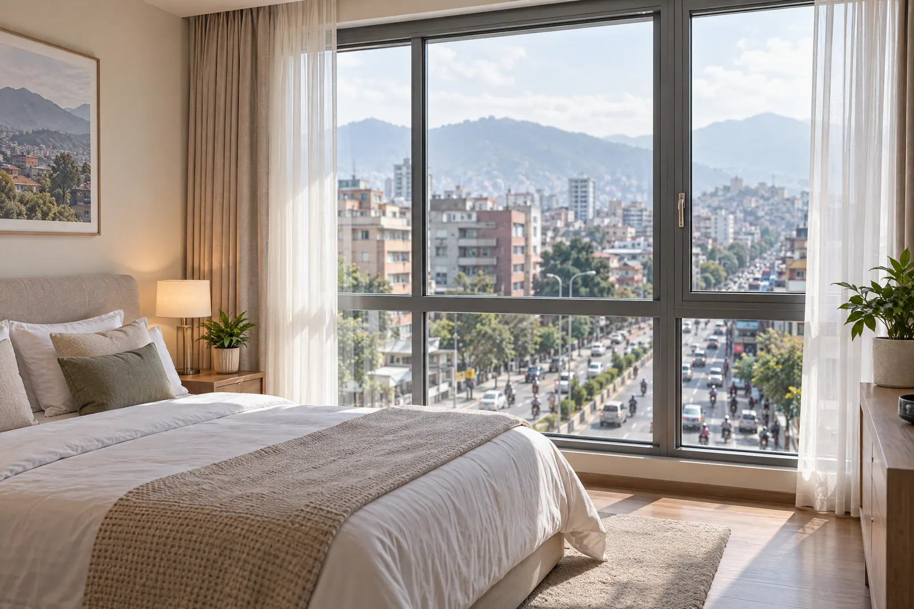
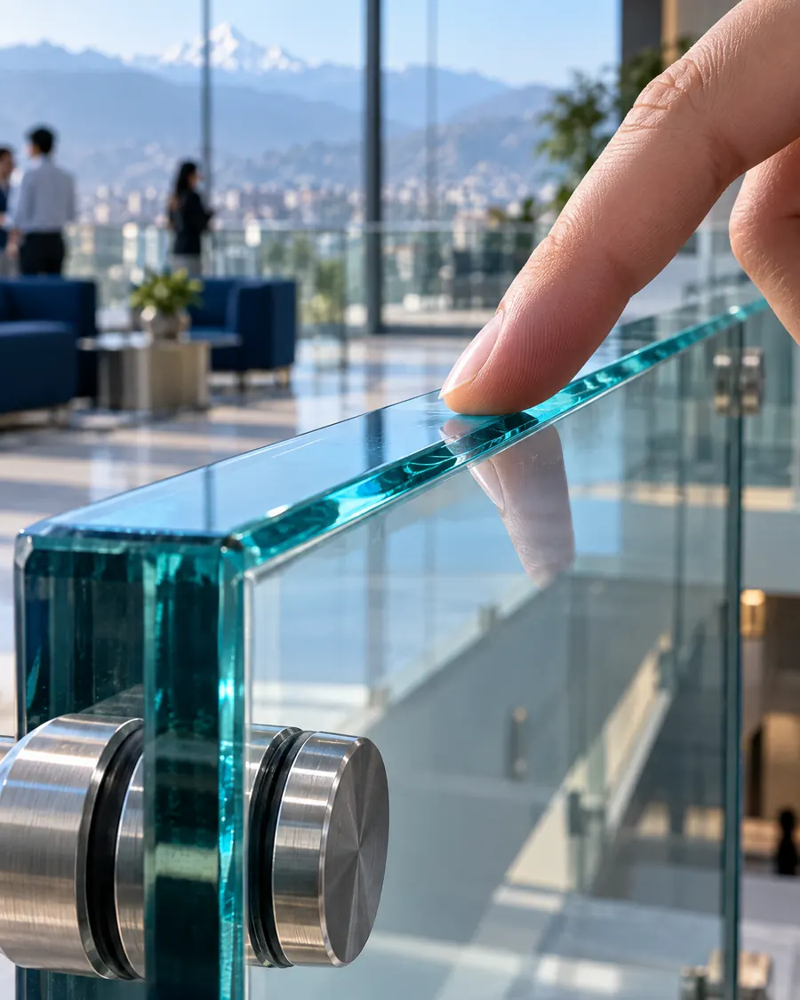
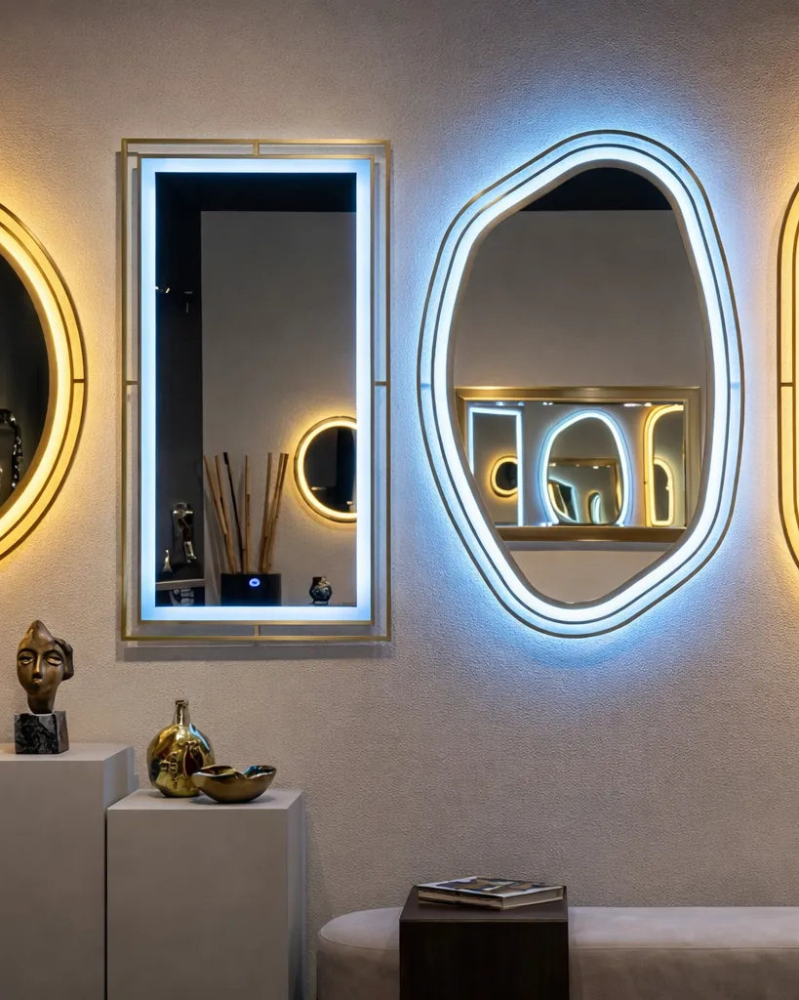

Toughened, Laminated & DGU Glass in Nepal
SOGI sells toughened, laminated, double glass (DGU), fluted and back-painted glass and mirrors, sourced from trusted glass makers and supplied cut to your size for fabricators, builders, interior designers and SOGI Projects installations.
Five glass types cover almost every job
Choosing the right glass is the first decision on every project.
Toughened (tempered) glass
About 4–5× stronger than normal glass. If it breaks, it shatters into small blunt pieces. It can't be cut or drilled after toughening.
Best for: Partitions, doors, shop fronts, showers, shelves
Laminated glass
Two sheets bonded with a PVB layer. If broken, the pieces stay stuck and the panel stays in place.
Best for: Overhead glass, railings, canopies, security fronts
DGU – double glass unit
Two sheets with a sealed air gap. Cuts outside noise and heat.
Best for: Windows, skylights, facades, meeting rooms
Fluted glass
Ribbed surface: light passes through, detail behind is hidden.
Best for: Decorative partitions, cafés, salons
Back-painted glass
Glass painted on the back in any shade. Easy to clean.
Best for: Kitchen backsplash, wall cladding, writing boards
Which thickness for which job?
Typical glass used by SOGI Projects. Your final spec depends on size, height and location.
| Application | Usual glass |
|---|---|
| Frameless partition / door | 12 mm toughened |
| Framed partition | 8–10 mm toughened |
| Shop front | 12 mm toughened |
| Shower enclosure | 8–10 mm toughened |
| Railing | 12 mm toughened / 13.52–17.52 mm laminated |
| Canopy / skylight | 8+8 to 12+12 mm laminated |
| Windows | 5–6 mm toughened or DGU |
| Shelves / table tops | 8–12 mm toughened |
Glass supplied to your measurement
- Cutting to size and shape
- Holes, notches and cut-outs for fittings
- Edge polishing (flat or bevelled)
- Toughening and lamination
- Frosting, back-painting and logo etching
SOGI does not manufacture glass. We source it from trusted glass makers and processors and supply it ready to fit. Send your drawing or sizes with hole positions, and we'll confirm thickness, processing and delivery.

Mirrors that stay clear for years
SOGI supplies wall, stand and LED mirrors made with Saint-Gobain and Modiguard glass: thick glass with a heavy silver coating that resists black edges.
- LED front-lit
- LED back-lit
- Round
- Oval
- Arch
- Square & rectangle
- Stand mirrors
- Framed & frameless
- Custom sizes

Glass questions
What is the price of toughened glass in Nepal?
Toughened glass is priced per square foot. The rate depends on thickness (5–12 mm), clear or colour, and processing such as holes and edge polishing. Rates change with the market, so WhatsApp +977-9705663388 with your size and thickness for today's rate.
Can toughened glass be cut after toughening?
No. All cutting, holes, notches and edge polishing are done before toughening. That is why accurate measurement matters, because a mistake means a new panel.
Toughened or laminated: which should I choose?
Toughened glass is strong and breaks into small blunt pieces, which makes it ideal for doors, partitions and showers. Laminated glass stays in place when broken, so it is required for overhead glass and recommended for railings above the ground floor.
Do you make DGU (double glass) for windows?
Yes. DGU from 4+10+4 to 8+10+8 mm reduces traffic noise and heat. We supply it to aluminium and UPVC window makers and for SOGI Projects jobs.
Does SOGI manufacture glass?
No. SOGI manufactures architectural glass hardware (glass fittings) in Nepal. Toughened, laminated, DGU and fluted glass and mirrors are sourced from trusted glass makers and sold by SOGI, cut and processed to your size.
Do you deliver glass across Nepal?
Yes. Glass is delivered from Bharatpur to cities across Nepal. Ask about delivery to your location when you order.
Need glass cut and toughened to size?
Send sizes, thickness and hole positions for a rate and delivery date.